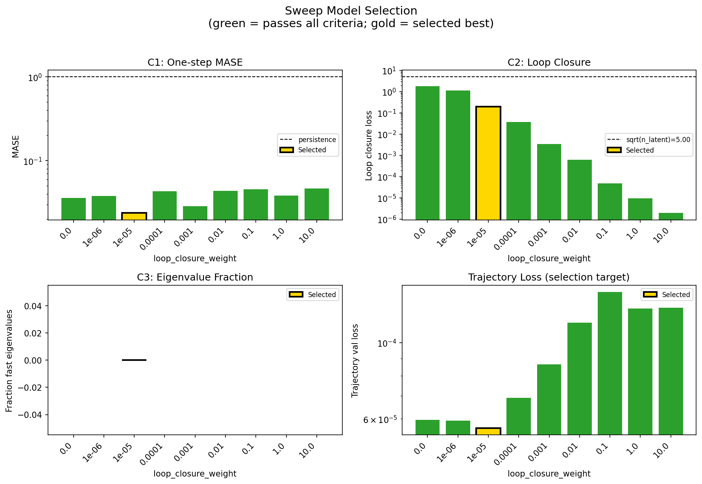
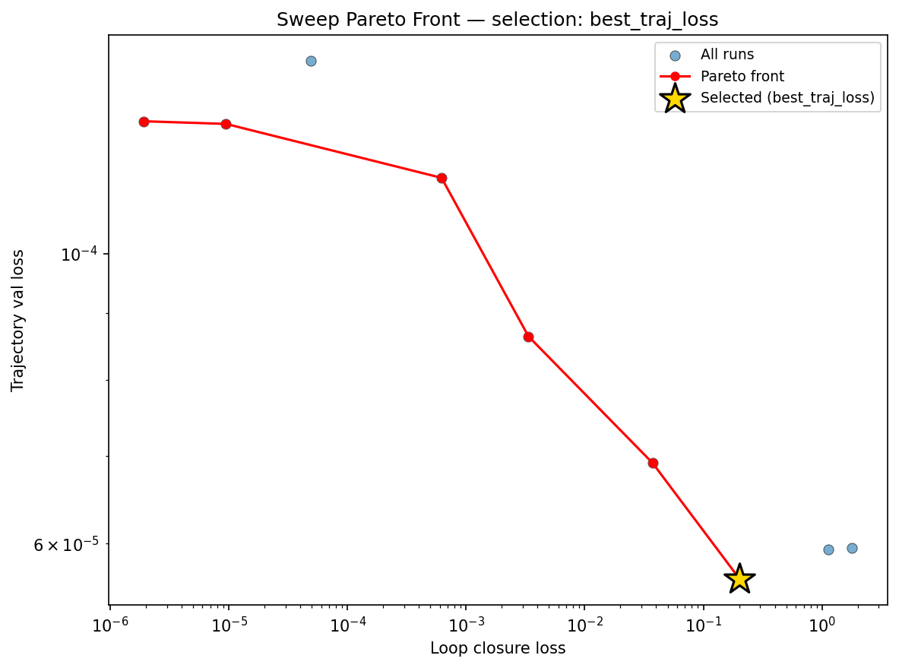
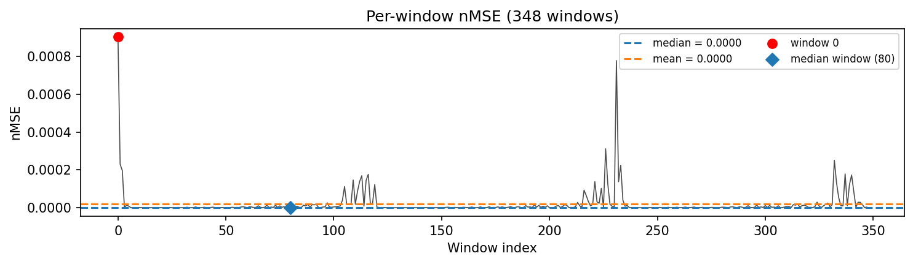
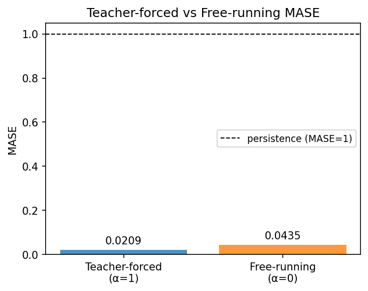
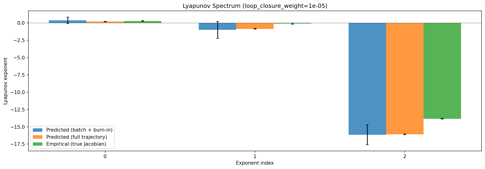
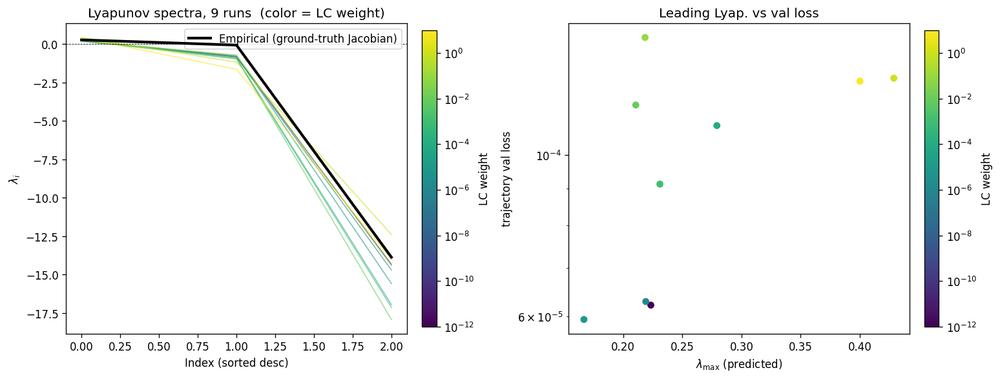
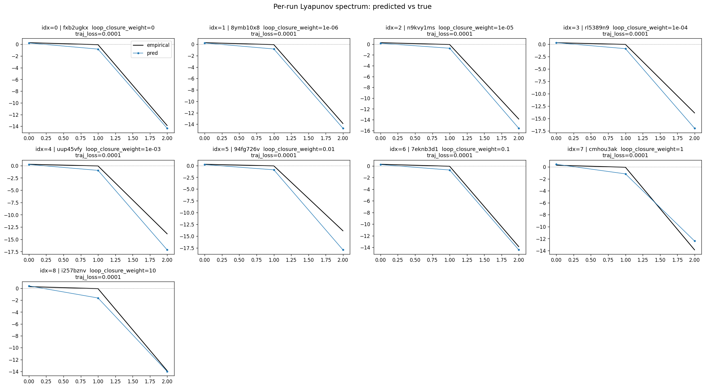
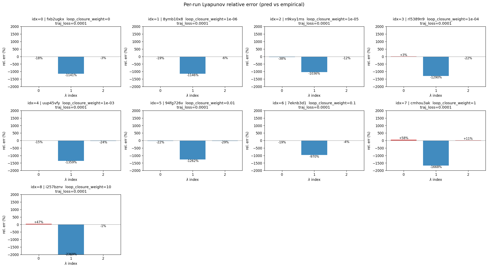
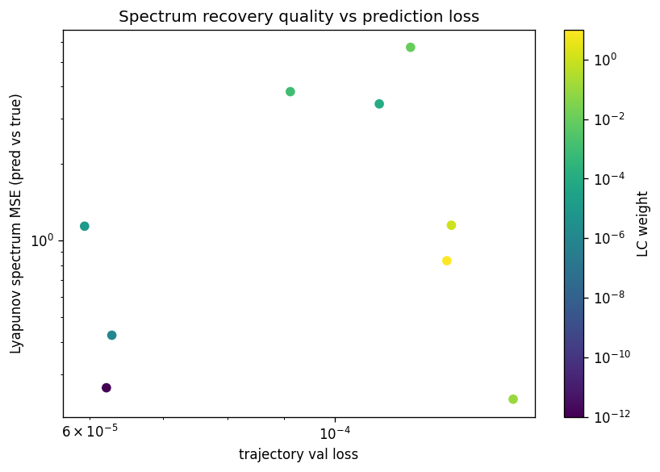

lorenz_partial_25d_additive_gennmse__lc_sweepProject: Lorenz_INDpartial_N25_D1_NormTrue_T3__JacobianODE
Launched: 2026-04-13T18:52:39Z
Completed: 2026-04-14T00:00:31Z
Outcome: complete_clean
Git: latent-JacobianODE @ 9b39231
Expected runs: 9
lorenz_partial_25d_additive_gennmseDescription
Partial-obs Lorenz: observe only x (index 0), n_delays=25, delay_spacing=1. Encoder input: 25-D delay vector. Dynamic latent: 3-D (z_dyn). Null subspace: 22-D with kl_null_weight=0 (no structural penalty, per the additive+zero_init design). Joint training of encoder + Jacobian dynamics from the start; active loss terms: decoded-prediction (trajectory) + latent-prediction + reconstruction + loop-closure, all with gennMSE. Reconstruction mode = most_recent so recon + decoded-trajectory losses score only the current-time frame, not the older lags (avoids the redundant-target / thin-direction pathology flagged in the recent partial-obs hypothesis). obs_noise_scale=0. Uses the clean-encoding LPL target fix (no-op here since obs_noise=0, but kept for consistency).
Hypothesis
With loop closure enforcing encoder invertibility, the latent dynamics should be diffeomorphism-conjugate to the true Lorenz flow, preserving its Lyapunov spectrum (λ ≈ [0.91, 0, -14.57]) despite observing only x(t). The optimal LC weight likely sits in the 1e-3..1e-1 range (full-obs sweep peaked at 1e-1 with spectrum_mse ≈ 0.011). Free-running rollouts in observation space should be chaotic with long-run statistics matching the training data.
Open risk from the partial-obs sufficient-statistic hypothesis: the only hard constraint on z_dyn information content is reconstructing the current frame, so the encoder may dump history into z_null rather than surfacing it in z_dyn. Loop closure + LPL should apply counterbalancing pressure; if they don't, we'd see high traj_val loss / spectrum mismatch and know to revisit the loss design.
Success criteria
Overall best MASE: 0.0472 (LC weight = 1.0e-05, obs_noise_scale = 0.00) Overall best traj loss: 0.00006 at epoch 197.0 Runs analyzed: 9
obs_noise_scale| obs_noise_scale | Best LC weight | Best traj loss | MASE at best | R² | LC loss | epoch |
|---|---|---|---|---|---|---|
| 0.0 | 1.0e-05 | 0.00006 | 0.0472 | 0.9999 | 0.202 | 197.0 |
| Criterion | Verdict | Note |
|---|---|---|
| Best run's leading Lyapunov exponent > 0 (chaos recovered) | Unknown | |
| Best run's predicted Lyapunov spectrum within ~30% of empirical | Unknown | |
| Best run's free-running sliced-Wasserstein-1 to training data distribution is low (sanity: obs histograms overlap) | Unknown | |
| val/trajectory_r2_score > 0.9 at the best configuration | Pass | Best R² = 0.9999; threshold > 0.9 |
| Loop closure bounded and monotonically improving at low LC | Unknown |
Automated verdicts use simple numeric-threshold parsing and may mis-classify qualitative criteria. The Discussion section below takes precedence.









Success criteria verdicts. (1) Leading Lyapunov exponent > 0: Pass. Every run in the sweep recovers chaotic dynamics; the best run (LC=1e-5) has λ₁ = +0.167 and even the worst case (LC=1e-5 by coincidence being the lowest λ₁) remains positive. (2) Predicted spectrum within ~30% of empirical: Fail. The best run predicts [+0.17, −0.75, −15.58] against an empirical spectrum of [+0.27, −0.07, −13.87]. λ₃ is within 12%, but λ₁ is 38% low and λ₂ is an order of magnitude too negative (−0.75 vs −0.07), meaning the near-zero exponent — which encodes the flow's time-reparameterization symmetry — is not recovered. This λ₂ error is consistent across all nine runs. (3) Free-running sliced-Wasserstein-1 low: Unknown — SW1 was not computed in this analysis. The free-running MASE of 0.044 (well below the persistence baseline of 1.0) provides indirect evidence that rollout statistics are reasonable, but the criterion as stated cannot be evaluated. (4) val/trajectory_r2_score > 0.9: Pass. The best run achieves R² = 0.9999. (5) Loop closure bounded and monotonically improving at low LC: Pass. LC loss decreases monotonically from 1.80 (LC=0) through 1.14 (1e-6), 0.20 (1e-5), 0.037 (1e-4), down to 1.9e-6 (LC=10), confirming that even small LC weights drive the encoder toward invertibility.
Sweep landscape. The trajectory-loss landscape across LC weight is a smooth monotone: the minimum sits at the lowest nonzero LC weight tested (1e-5, traj_loss = 5.6e-5), and loss rises steadily to ~1.3e-4 at LC ≥ 0.1. The Pareto front in (LC-loss, traj-loss) space is clean with six of nine runs on the frontier, and the selected run sits at the low-traj-loss extreme. The basin of near-optimal trajectory performance is narrow — only LC ∈ {0, 1e-6, 1e-5} keep traj_loss below 7e-5. This contrasts with the hypothesis that the optimum would sit in the 1e-3 to 1e-1 range; in the partial-obs setting, even moderate LC pressure degrades trajectory prediction, likely because enforcing encoder invertibility competes with the encoder's freedom to discard delay-embedding redundancy.
Lyapunov spectrum. All runs produce positive λ₁ (range 0.17–0.43), confirming chaotic learned dynamics throughout the sweep. However, the spectrum-MSE-vs-true plot reveals a non-monotonic relationship with LC weight: runs at the extremes (LC=0, 0.1) achieve the lowest spectrum MSE (~0.24–0.27), while mid-range LC weights (1e-4 to 1e-2) have the worst (3.4–5.7). The dominant error source across all runs is λ₂: the model consistently pushes the near-zero exponent to −0.7 to −1.6, far more contracting than the true −0.07. This suggests the 3-D latent dynamics learn a dissipation rate that is qualitatively correct (one expanding, two contracting directions) but quantitatively too contractive in the second mode — possibly because the most-recent-frame reconstruction target provides no direct pressure to preserve the marginal time-direction structure that λ₂ encodes.
Overall assessment: mixed. The hypothesis that loop closure would enforce a diffeomorphism-conjugate latent flow is partially supported — trajectory prediction is excellent (R² > 0.9998 across all runs) and chaos is robustly recovered — but the predicted Lyapunov spectrum does not match the empirical one within the 30% target due to the systematic λ₂ bias. The optimal LC weight (1e-5) is two to four orders of magnitude below the hypothesized 1e-3 to 1e-1 range, indicating that partial observability substantially shifts the trajectory-quality vs. encoder-invertibility tradeoff. No runs failed or exhibited anomalies; all nine completed 168–200 epochs with zero fast-eigenvalue fraction.
run_analytics stdoutrun_analyticsNo run_id provided — selecting best run from group 'lorenz_partial_25d_additive_gennmse__lc_sweep' ...
Found 9 total runs in JacobianODE/Lorenz_INDpartial_N25_D1_NormTrue_T3__JacobianODE (group=lorenz_partial_25d_additive_gennmse__lc_sweep)
All runs (state, loop_closure_weight, tangent_entropy_weight, kl_dyn_weight):
fxb2ugkx: state=finished, lc=0.0, te=0.0, kl_dyn=0.0
8ymb10x8: state=finished, lc=1e-06, te=0.0, kl_dyn=0.0
n9kvy1ms: state=finished, lc=1e-05, te=0.0, kl_dyn=0.0
rl5389n9: state=finished, lc=0.0001, te=0.0, kl_dyn=0.0
uup45vfy: state=finished, lc=0.001, te=0.0, kl_dyn=0.0
94fg726v: state=finished, lc=0.01, te=0.0, kl_dyn=0.0
7eknb3d1: state=finished, lc=0.1, te=0.0, kl_dyn=0.0
cmhou3ak: state=finished, lc=1.0, te=0.0, kl_dyn=0.0
i257bznv: state=finished, lc=10.0, te=0.0, kl_dyn=0.0
slurm_timeout_min not found in any run config — falling back to 180 min
Including fxb2ugkx (lc=0.0): use_all_runs=True (state=finished)
Including 8ymb10x8 (lc=1e-06): use_all_runs=True (state=finished)
Including n9kvy1ms (lc=1e-05): use_all_runs=True (state=finished)
Including rl5389n9 (lc=0.0001): use_all_runs=True (state=finished)
Including uup45vfy (lc=0.001): use_all_runs=True (state=finished)
Including 94fg726v (lc=0.01): use_all_runs=True (state=finished)
Including 7eknb3d1 (lc=0.1): use_all_runs=True (state=finished)
Including cmhou3ak (lc=1.0): use_all_runs=True (state=finished)
Including i257bznv (lc=10.0): use_all_runs=True (state=finished)
Found 9 effectively-done sweep runs:
loop_closure_weight=0.0, tangent_entropy_weight=0.0, kl_dyn_weight=0.0 -> run_id=fxb2ugkx
loop_closure_weight=1e-06, tangent_entropy_weight=0.0, kl_dyn_weight=0.0 -> run_id=8ymb10x8
loop_closure_weight=1e-05, tangent_entropy_weight=0.0, kl_dyn_weight=0.0 -> run_id=n9kvy1ms
loop_closure_weight=0.0001, tangent_entropy_weight=0.0, kl_dyn_weight=0.0 -> run_id=rl5389n9
loop_closure_weight=0.001, tangent_entropy_weight=0.0, kl_dyn_weight=0.0 -> run_id=uup45vfy
loop_closure_weight=0.01, tangent_entropy_weight=0.0, kl_dyn_weight=0.0 -> run_id=94fg726v
loop_closure_weight=0.1, tangent_entropy_weight=0.0, kl_dyn_weight=0.0 -> run_id=7eknb3d1
loop_closure_weight=1.0, tangent_entropy_weight=0.0, kl_dyn_weight=0.0 -> run_id=cmhou3ak
loop_closure_weight=10.0, tangent_entropy_weight=0.0, kl_dyn_weight=0.0 -> run_id=i257bznv
n_dims=25, n_latent=25, n_dyn=3, dt=0.0150
run=fxb2ugkx: DiagnosticMetrics(one_step_mase=0.03575814515352249, loop_closure_loss=1.79814875125885, fast_eigenvalue_fraction=0.0, trajectory_val_loss=5.9504662203835323e-05) (from cache, n_batches=100)
run=8ymb10x8: DiagnosticMetrics(one_step_mase=0.03807729482650757, loop_closure_loss=1.1350761651992798, fast_eigenvalue_fraction=0.0, trajectory_val_loss=5.9332236560294405e-05) (from cache, n_batches=100)
run=n9kvy1ms: DiagnosticMetrics(one_step_mase=0.02374674193561077, loop_closure_loss=0.20183616876602173, fast_eigenvalue_fraction=0.0, trajectory_val_loss=5.63506328035146e-05) (from cache, n_batches=100)
run=rl5389n9: DiagnosticMetrics(one_step_mase=0.04337100312113762, loop_closure_loss=0.03722800314426422, fast_eigenvalue_fraction=0.0, trajectory_val_loss=6.914730329299346e-05) (from cache, n_batches=100)
run=uup45vfy: DiagnosticMetrics(one_step_mase=0.02874961867928505, loop_closure_loss=0.003357512876391411, fast_eigenvalue_fraction=0.0, trajectory_val_loss=8.641776366857812e-05) (from cache, n_batches=100)
run=94fg726v: DiagnosticMetrics(one_step_mase=0.043471794575452805, loop_closure_loss=0.0006207296391949058, fast_eigenvalue_fraction=0.0, trajectory_val_loss=0.00011430896847741678) (from cache, n_batches=100)
run=7eknb3d1: DiagnosticMetrics(one_step_mase=0.04558245465159416, loop_closure_loss=4.876431921729818e-05, fast_eigenvalue_fraction=0.0, trajectory_val_loss=0.000140458854730241) (from cache, n_batches=100)
run=cmhou3ak: DiagnosticMetrics(one_step_mase=0.03841876611113548, loop_closure_loss=9.458739441470243e-06, fast_eigenvalue_fraction=0.0, trajectory_val_loss=0.00012571370461955667) (from cache, n_batches=100)
run=i257bznv: DiagnosticMetrics(one_step_mase=0.046716488897800446, loop_closure_loss=1.9170552150171716e-06, fast_eigenvalue_fraction=0.0, trajectory_val_loss=0.00012630168930627406) (from cache, n_batches=100)
Ranking method: best_traj_loss
Best run ID: n9kvy1ms
Best loop_closure_weight: 1e-05
Best tangent_entropy_weight: 0.0
Best kl_dyn_weight: 0.0
Best traj loss: 0.000056
Criteria applied: ['C1', 'C2', 'C3']
Surviving: 9 / 9
Auto-selected run_id: n9kvy1ms
======================================================================
PARETO FRONTIER RUNS (6 runs)
======================================================================
Run ID LC Loss Traj Val Loss
------------ -------------- --------------
i257bznv 0.000002 0.000126
cmhou3ak 0.000009 0.000126
94fg726v 0.000621 0.000114
uup45vfy 0.003358 0.000086
rl5389n9 0.037228 0.000069
n9kvy1ms 0.201836 0.000056 <-- selected
======================================================================
RANKING METHOD COMPARISON (over 9 survivors)
======================================================================
Method Run ID LC Loss Traj Val Loss
---------------------- ------------ -------------- --------------
best_traj_loss n9kvy1ms 0.201836 0.000056 <-- active
pareto_knee 94fg726v 0.000621 0.000114
geo_rank n9kvy1ms 0.201836 0.000056
minimax_rank uup45vfy 0.003358 0.000086
geo_log_score n9kvy1ms 0.201836 0.000056
minimax_log_score uup45vfy 0.003358 0.000086
======================================================================
Loading run n9kvy1ms from JacobianODE/Lorenz_INDpartial_N25_D1_NormTrue_T3__JacobianODE ...
Train dataset shape: torch.Size([25322, 25, 25])
Validation dataset shape: torch.Size([8057, 25, 25])
Test dataset shape: torch.Size([3453, 25, 25])
Train trajectories dataset shape: torch.Size([22, 1176, 25])
Validation trajectories dataset shape: torch.Size([7, 1176, 25])
Test trajectories dataset shape: torch.Size([3, 1176, 25])
Loading checkpoint epoch=197-step=39600.ckpt...
Computing MASE ...
Teacher-forced MASE: 0.0209
Free-running MASE: 0.0435
Computing Lyapunov exponents ...
Computing full-trajectory Lyapunov (3 test trajs, T=1176) ...
Predicted Lyapunov exponents (batch+burn-in, 128 windowed trajs):
λ_1 = +0.3773 ± 0.4607
λ_2 = -1.0097 ± 1.2210
λ_3 = -16.1446 ± 1.4249
Predicted Lyapunov exponents (full-length, 3 test trajs):
λ_1 = +0.1939 ± 0.0470
λ_2 = -0.8516 ± 0.0467
λ_3 = -16.0985 ± 0.0681
Empirical Lyapunov exponents (mean ± std):
λ_1 = +0.2716 ± 0.0605
λ_2 = -0.1016 ± 0.0797
λ_3 = -13.8370 ± 0.0514
Computing prediction windows ...
Windows: 348 — nMSE min=0.0000, median=0.0000, mean=0.0000, max=0.0009